二战后中东地区发生过9—10次冲突（五次中东战争、两伊战争、海湾战争、阿富汗、伊拉克、叙利亚等）。由于早期A股尚未开市，对A股的直接历史数据不足，主要以美股权益资产为观察标的。
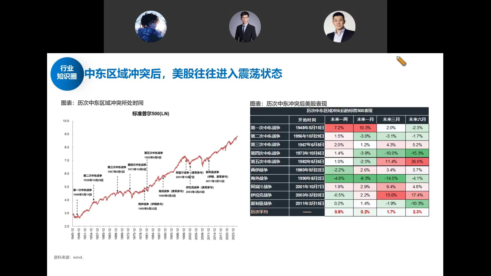
从标普500的历次冲突后走势看，冲突爆发初期权益资产普遍承压下跌，但见底后的修复路径并不一致。表格统计了每次冲突后不同时间窗口的涨跌幅与胜率。
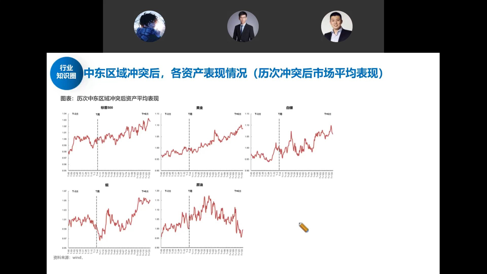
将权益（美股）、黄金、白银、铜、原油五类资产在历次冲突后的走势做平均化处理，可以看到清晰的排序：
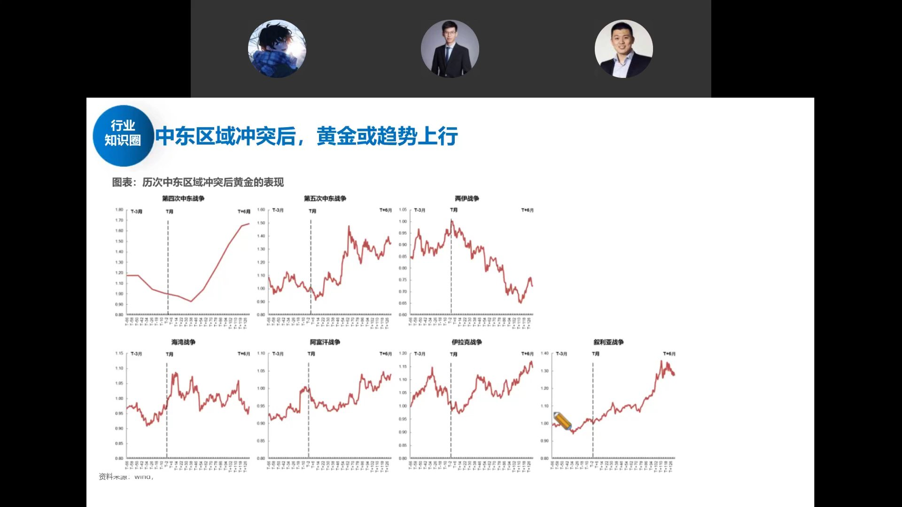
关键提醒：黄金并非"遇冲突必涨"。第五次中东战争、两伊战争期间黄金反而暴跌，伊拉克战争和阿富汗战争期间表现也一般。黄金的定价因素太复杂（流动性、利率、美元、冲突走向），不能简单等同于避险。
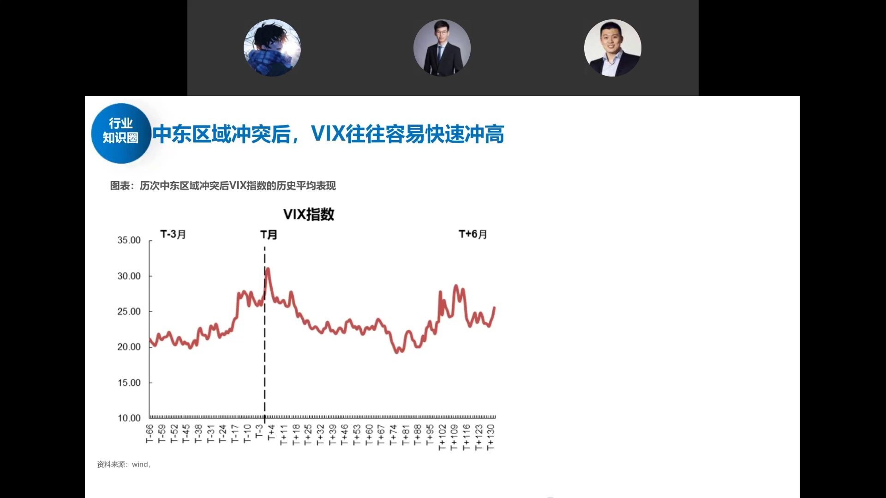
当无法预测冲突走向时，最实用的策略是观察VIX（波动率指数/恐慌指数）。VIX飙升=市场恐慌，VIX见顶回落=冲突走向趋于明朗、情绪开始修复。
历史规律：
本次冲突VIX最高仅约22，而去年4月7日加征关税时VIX飙到近50（接近金融危机水平）。说明全球市场对本次冲突的恐慌程度并不高，权益资产也没有出现大幅下跌。
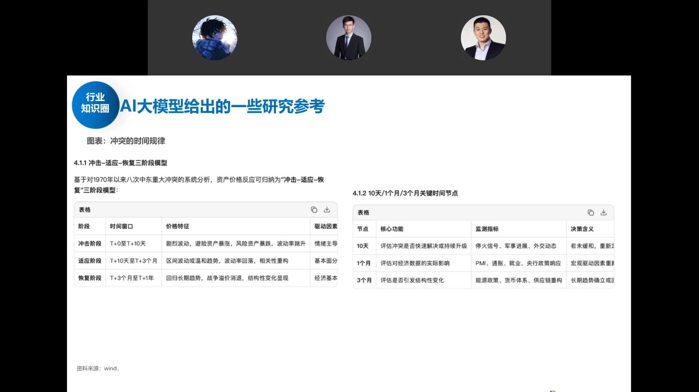
团队借助AI大模型，基于历史冲突数据和当前战况做了情景推演。从时间维度有三个关键评估窗口：
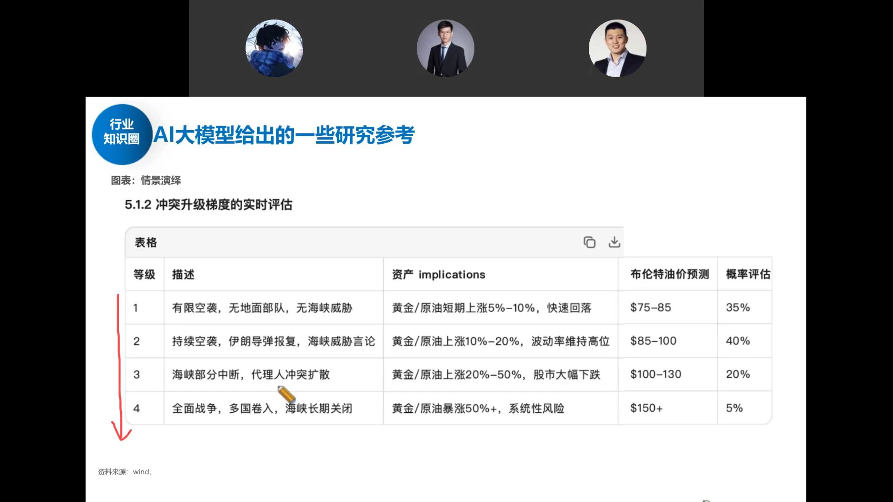
从情景严重程度分四档（影响从小到大）：
历史规律：凡是中东地缘冲突，很多次都没有速战速决，油价涨幅都很夸张。油价飙升三四成甚至更高时，除了2022年（美国内需太强），历史上美国经济都出现了问题。
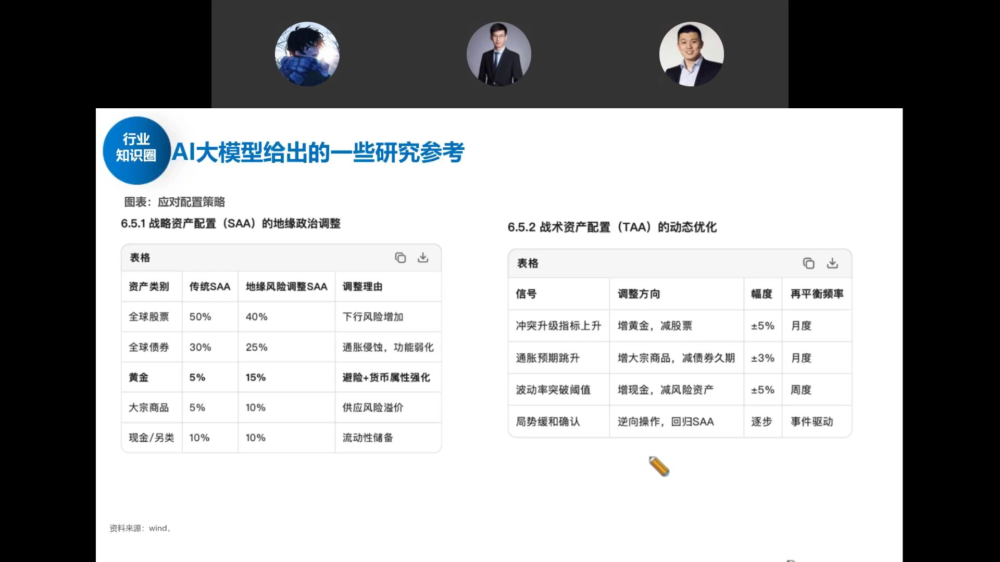
基于以上推演，AI模型给出的大类资产配置建议：
对大多数权益投资者的建议：短期小幅降仓位即可，不需要清仓all-in原油或黄金。这是一个对冲操作，不是方向性押注。
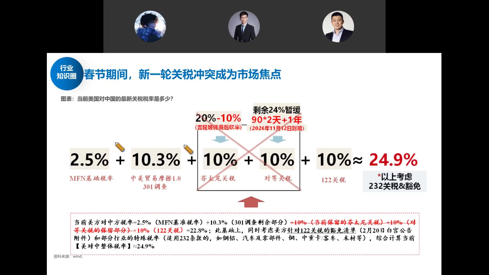
春节期间，特朗普此前加征的关税被最高法院否决，随后又加了3%的新关税。实质变化：
这对制造业和出口链是利好，部分对冲了人民币升值对出口的负面影响。但市场对此讨论较少。
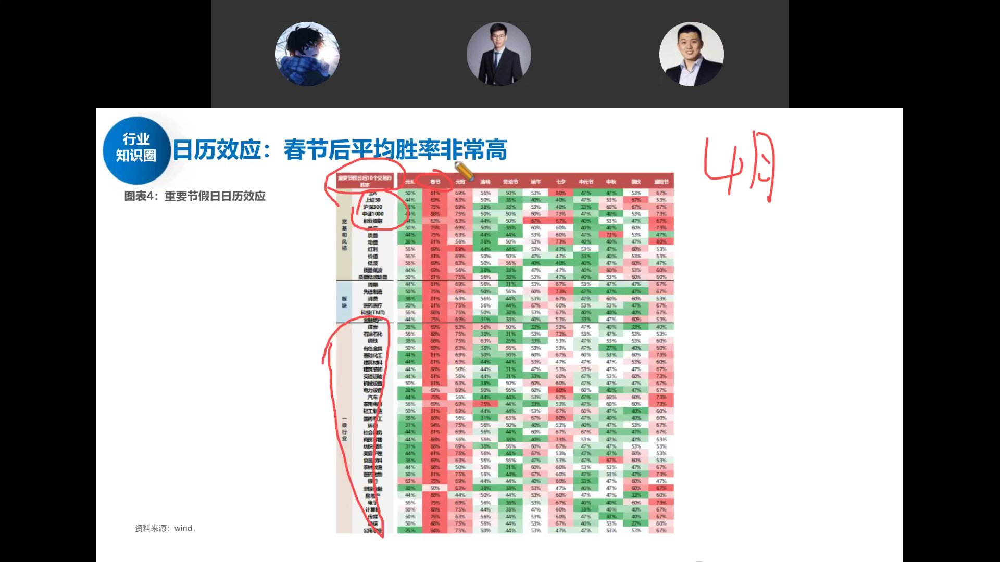
统计过去20年重要节假日后10个交易日各指数和行业的上涨概率：
历史节奏：头年12月先调一调→1—2月春季躁动开始涨→3月两会横盘（强弩之末）→4月数据验证期容易回调。逻辑是：涨了一个季度后预期打满，4月迎来GDP和一季报等客观数据验证，除非经济特别强，否则容易"见光死"。
即使是2015年大牛市，4月份也是横着走的。当前3月初尚属安全窗口，但建议4月阶段性防守。轮动市很难赚钱——这是零和博弈，不要假设自己是最聪明的那个人。
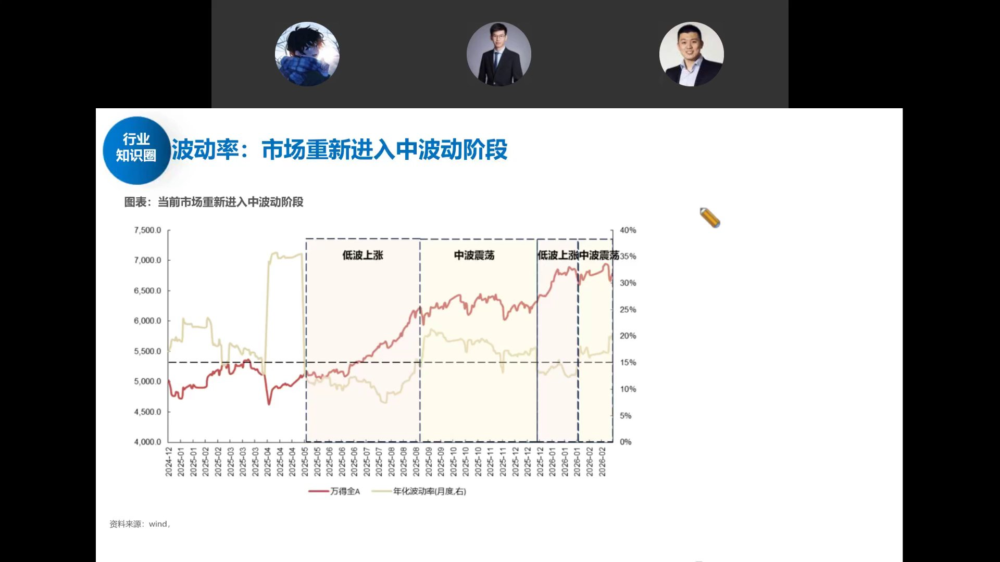
波动率（收益率的标准差）是判断市场状态的重要工具：波动率越低，说明涨得越稳、越好赚钱；波动率越高，上蹿下跳越难操作。
指数级别的大行情只有两种环境能产生：
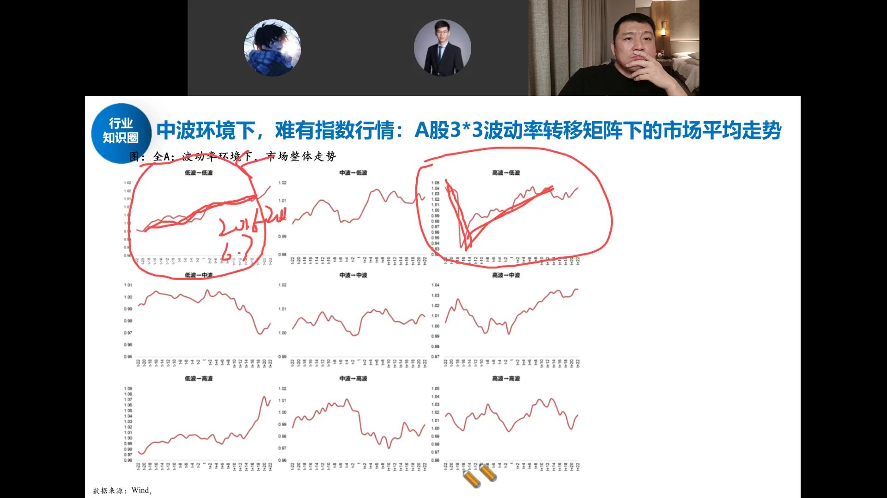
3×3波动率转移矩阵验证了这一结论：从低波到低波、从高波到低波（深蹲后修复）的环境下，指数平均收益最好；而当前处于中波环境，不属于上述两种有利情境，因此难有指数级别的大行情。
当前市场状态：指数创新高但波动率反而在下降——说明涨得稳，不是加速冲顶。历史大顶的特征是情绪亢奋+所有人看多+越涨越快+急剧放量+波动率急速拉升，目前并不符合。
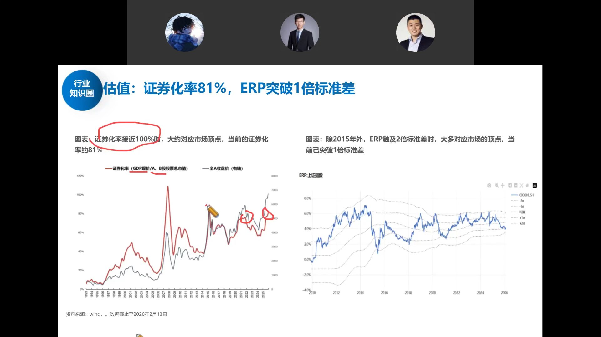
从估值看，证券化率和ERP（股权风险溢价）都指向当前市场偏贵——红线（股票相对吸引力）已经从低位大幅回升后走到高位，意味着股票性价比下降。当前估值水位与2021年顶部、2017年顶部大致相当。
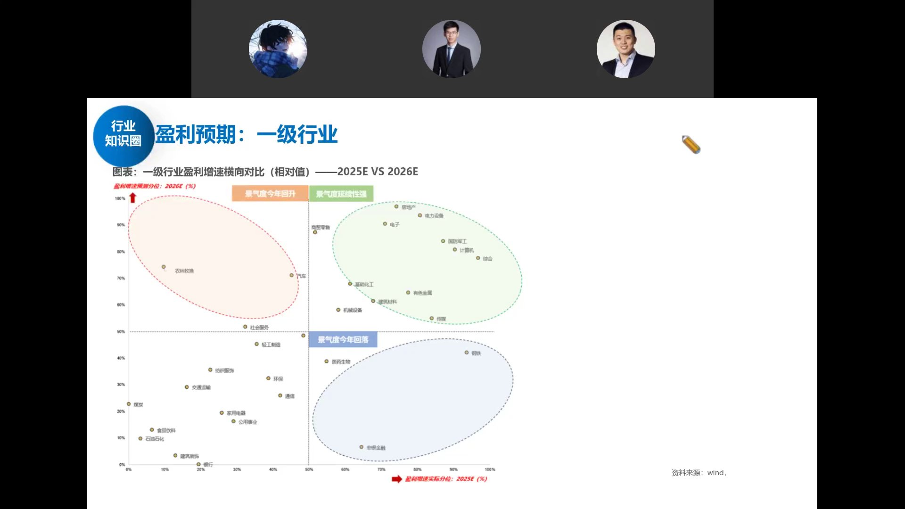
盈利预期散点图（横轴2025E增速，纵轴2026E增速）将行业分为四个象限：
年初市场对盈利的判断存在"线性外推"偏差——去年好的就觉得今年继续好，去年差的就觉得今年继续差。但实际上下半年随着数据验证，预期会不断修正。当前位置不便宜，但也不是马上就跌，只是安全垫不够厚了。
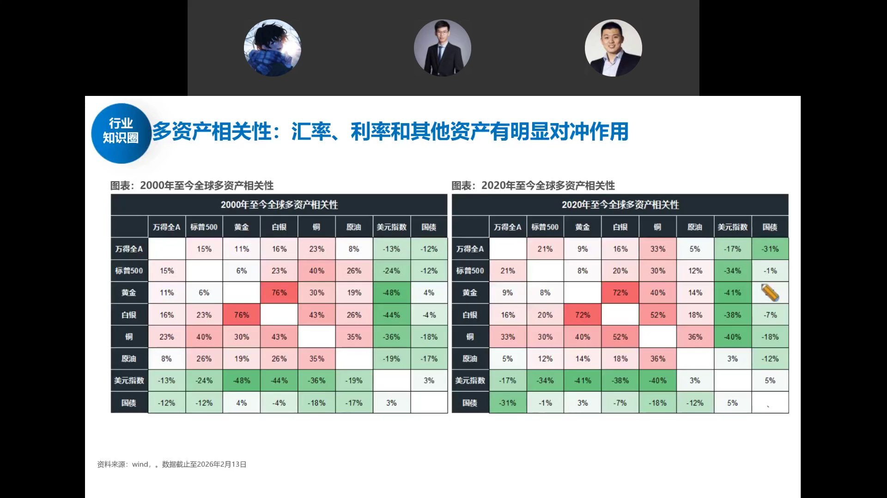
对比2000年至今和2020年至今的多资产相关系数矩阵，可以看到近年资产间的相关性明显上升——股债商之间同涨同跌的程度比历史更高。
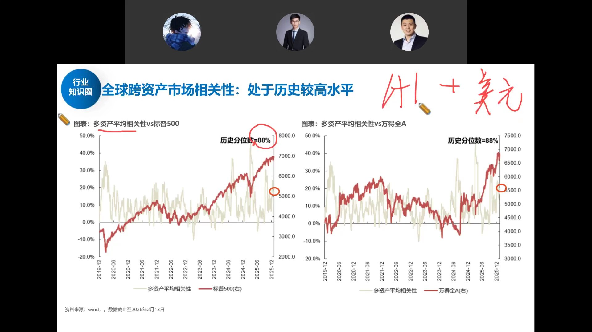
当前全球跨资产相关性处于88%历史分位的极高水平。这意味着：
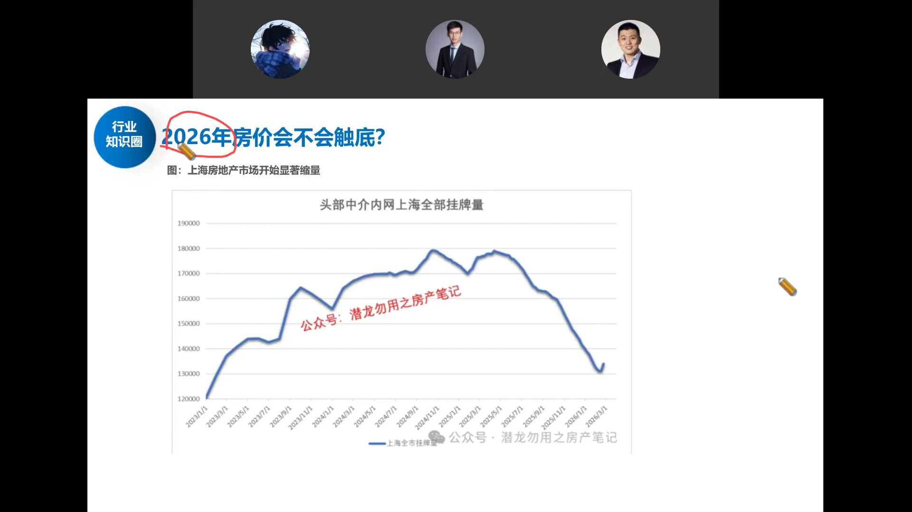
以上海为代表，二手房挂牌量从高位持续缩量，成交量和价格开始企稳。一线城市的房价走势是观察地产周期是否见底的重要窗口。
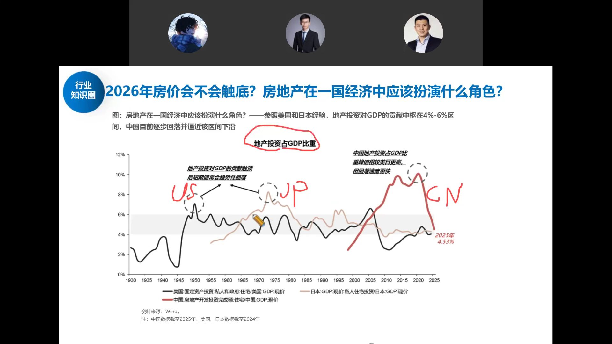
横向比较美国、日本、中国的房地产投资占GDP比重，中国当前仍处于高位回落过程中，但已接近历史可比的底部区域。
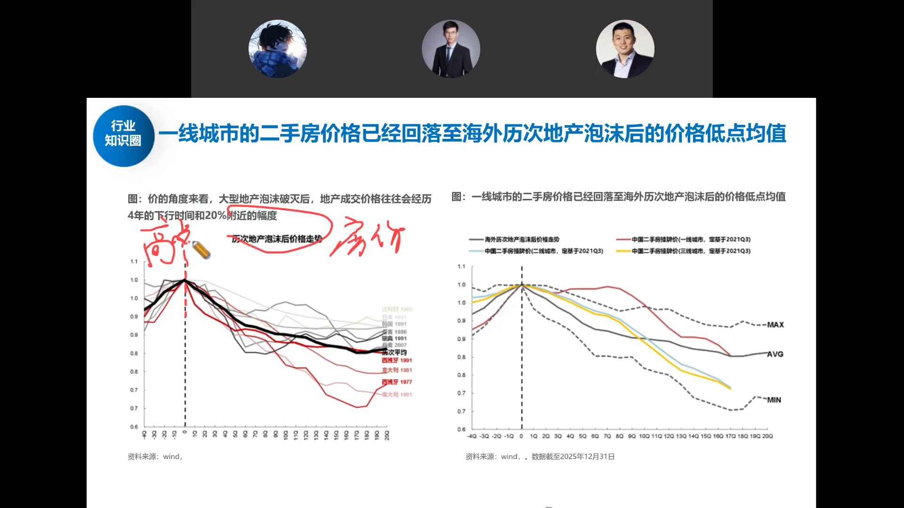
一线城市二手房价格已经回落至海外历次地产泡沫破裂后的价格低点均值水平——从日本90年代、美国08年等历史经验看，这个价位区间往往对应周期底部区域。
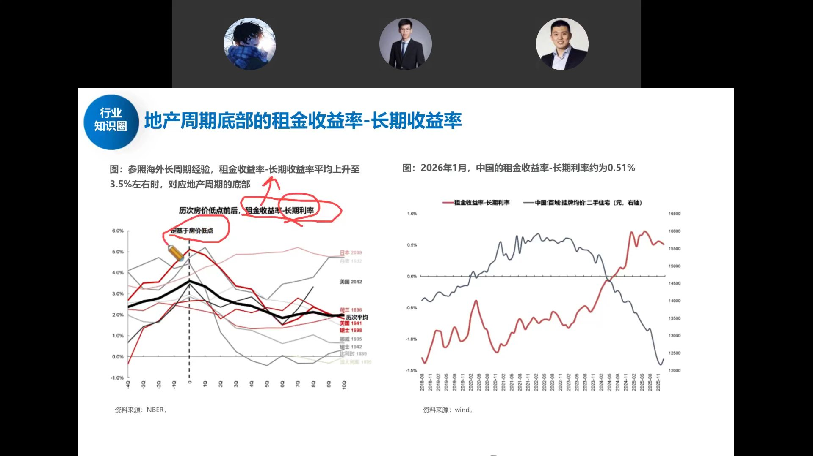
从租金收益率与长期国债收益率的利差看，当前租金回报率的吸引力正在回升——这是房地产投资价值的重要锚。
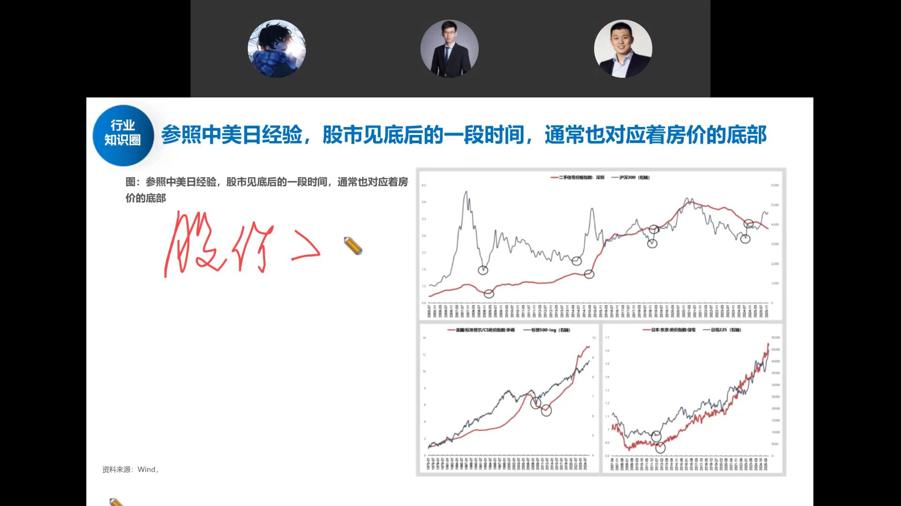
历史规律：股市见底领先于房价见底。深圳、美国、日本的数据都显示，股市先触底回升，房价滞后约一段时间才见底。
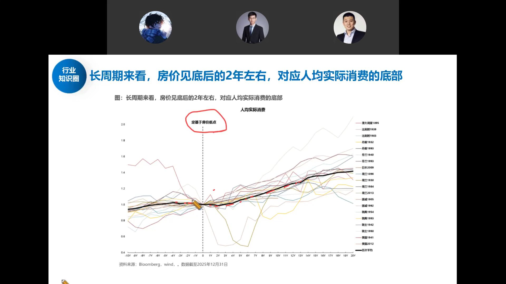
更进一步：房价见底后约2年，人均实际消费才见底回升。这意味着如果地产周期确实在2026年触底，消费的真正复苏可能要到2027—2028年。
小邓老师的判断：今年地产比市场预期要好——从2021年开始跌了五年，已经跌到内在价值区间，"跌无可跌"。但这不意味着要去买房，而是对股市而言，地产链和消费的尾部风险在下降，被市场过度悲观定价的传统板块存在预期修复空间。
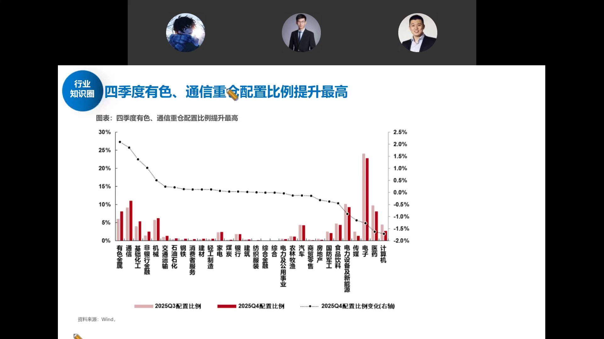
2025年四季度公募基金持仓变化：有色金属、通信的重仓配置比例提升最高，反映了市场对AI算力和资源品的共识。
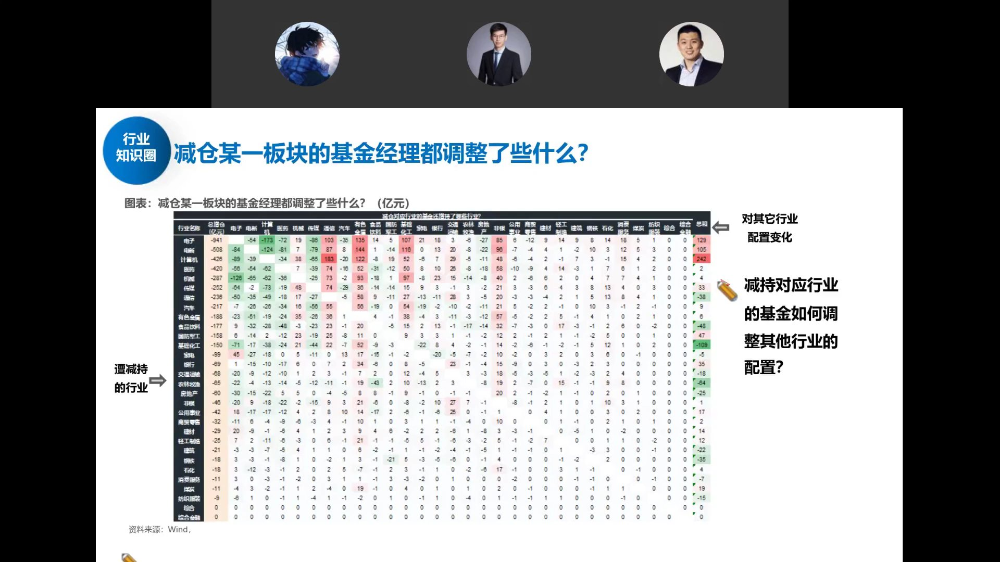
这张矩阵表回答了一个关键问题：减仓了A板块的基金经理，把钱加到了哪里？
Q&A要点总结：①当前不是历史大顶，但位置不便宜，今年操作难度显著大于去年；②"时间换空间"横盘消化是较理想情景（约50%概率）；③二季度（4月前后）是敏感期，两会政策清晰后新的交易逻辑会出来；④向上踏空风险有限，向下空间也不大（5%级别）；⑤对偏老的资产（地产、消费）市场预期太低了，GDP目标4.5—5%意味着内需不可能继续下滑。